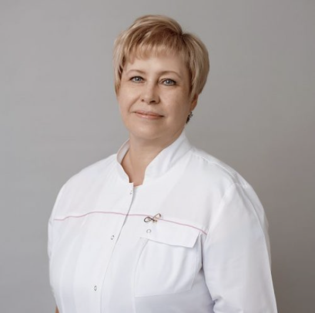

Наши врачи
Отзывы
О нас
Наши врачи
Каталог услуг
Главная

Веселова Елена Анатольевна
Эндокринолог
Зам.главного врача по лечебной части.
Врач Эндокринолог. Высшая врачебная квалификационная категория..
 Наши врачи
Наши врачи